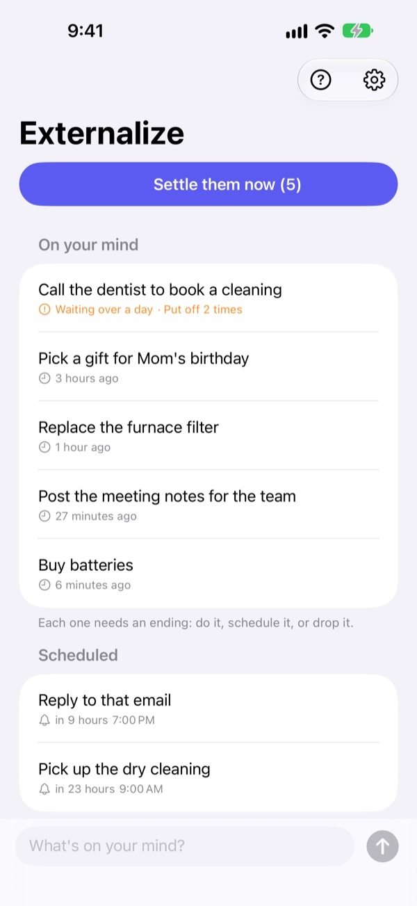
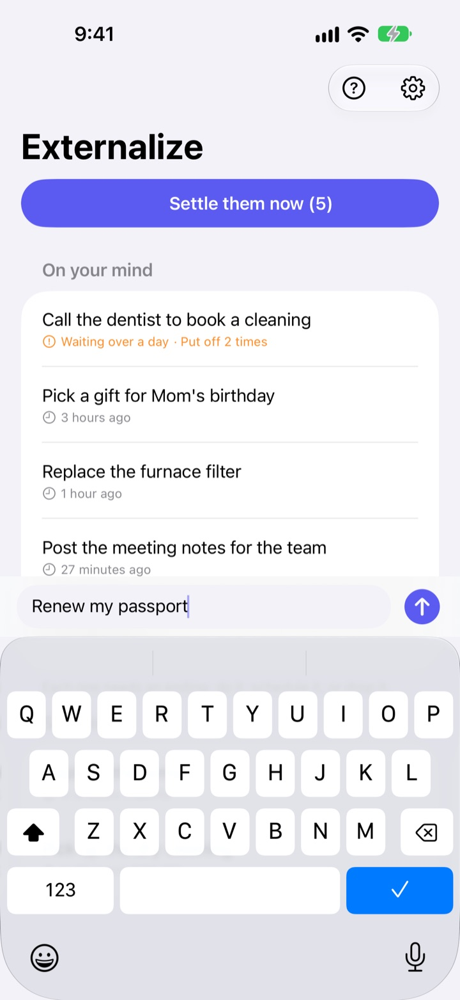
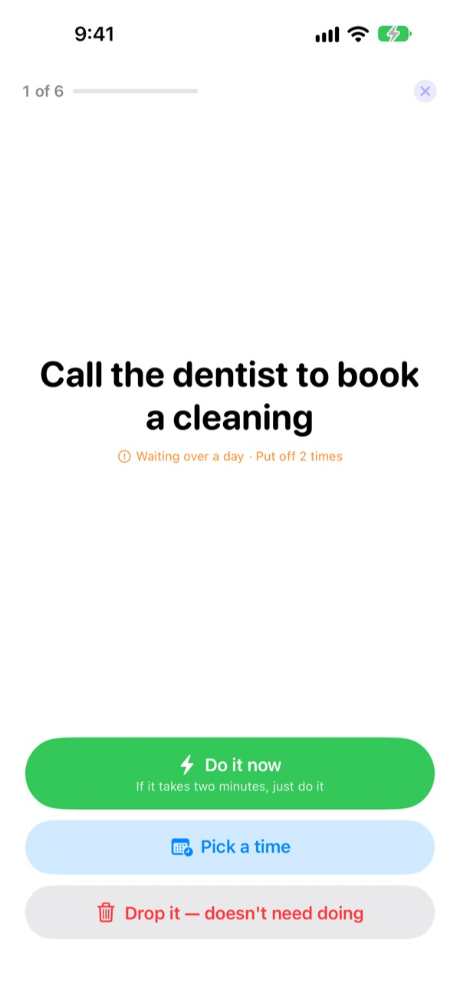
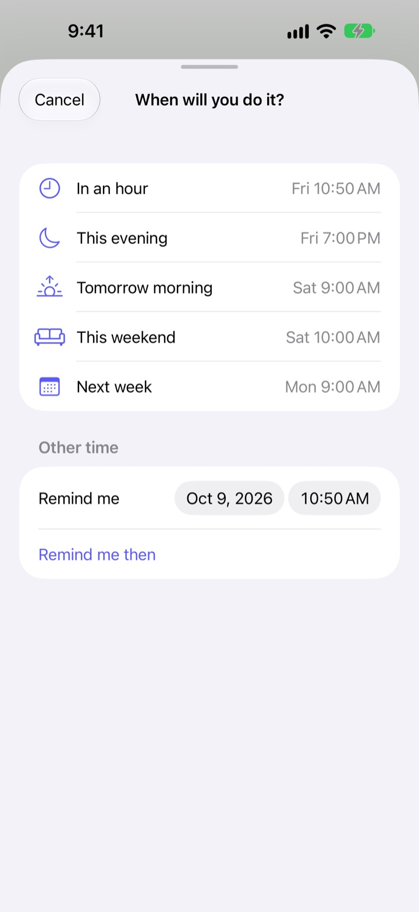

Jot it down now.
Settle it tonight.
"Oh right, I need to..." Get it out of your head in a few words and let it go. In the evening, give whatever is left an ending, one at a time.
Every feature is free. No account, no sign-in.

Try it here
Type something that's on your mind, or tap an example. Then hit Settle them now and give each one an ending.
Small things still take up room in your head
In the shower, at a red light, just as you drift off: "I need to do that thing." There's nowhere handy to write it, so you hold on to it, and whatever you were doing gets a little blurrier. To-do apps want a list and a due date first, so even writing it down turns into a chore.
Three seconds, then let go
Open the app and type into the line at the bottom. No lists, folders or due dates to pick.
Tap the Lock Screen widget and it opens on a blank line. Say Remember in Externalize to Siri, or put it on the Action Button, and it's saved without opening the app.

Settle them in the evening
If anything is still open, you get one reminder at 9 PM. Nothing open, no nudge.
Start settling and items come up one at a time, large and clear. Pick Do it now, Pick a time or Drop it and the next one appears. If it takes two minutes, start the timer and get it done.

Nothing is left to rot
Pick In an hour, This evening, Tomorrow morning, This weekend or Next week and it comes back then. The notification lets you mark it Done, move it to Tomorrow morning or Drop it.
Anything waiting over a day, and anything you keep putting off, is marked, so the stuff that keeps slipping stands out.

Three steps to start
- 1
Write it down
A few words in the app, on the Lock Screen widget or through Siri, whichever is closest.
- 2
Allow notifications
It asks once, the first time you write something. They carry the evening reminder and the times you pick.
- 3
Settle it tonight
Tap the reminder or Settle them now and give each item an ending.
Handling items from the list
- Tap an item
- choose Done, Pick a time or Drop it
- Swipe right
- Done (it leaves the list)
- Swipe left
- Drop it, or Schedule to pick a time
- Settle them now
- go through what's left, one at a time
- Remember in Externalize
- tell Siri, without opening the app
- Settings ▸ Evening reminder
- change the time or turn it off
When you pick a time, This evening means 7 PM, Tomorrow morning means 9 AM, This weekend means Saturday at 10 AM and Next week means Monday at 9 AM. You can also choose any date and time yourself.
Questions
Can I write something down without opening the app?
Yes. Say Remember in Externalize to Siri; it asks what's on your mind and saves it. Assign the Write It Down shortcut to the Action Button in Settings and it takes one press.
How do I add the Lock Screen widget?
Touch and hold the Lock Screen, tap Customize ▸ Lock Screen, tap the widget area and add Externalize. One tap opens the app on a blank line, and it shows how many items are left. There's a small Home Screen widget too.
Can I change or turn off the evening reminder?
Tap the gear at the top right ▸ Evening reminder to change the time or turn it off. It's 9 PM by default and stays quiet on days when nothing is open.
I'm not getting notifications.
If Externalize's settings say notifications are off, tap the button there to turn them on in iPhone Settings. On days when nothing is open, no evening reminder is expected.
How does a scheduled item come back?
You get a notification at the time you picked. Touch and hold it to choose Done, Tomorrow morning or Drop it. If you do nothing, it goes back to On your mind and you settle it next time.
Can I bring back something I marked Done or dropped?
No. Settled items are removed from the list, and there's no archive. If you aren't sure yet, pick a time instead of dropping it.
Will my items move to a new phone?
No. Everything stays on this device and is never sent to iCloud or a server. Deleting the app deletes it too.
Which devices does it run on?
iPhone with iOS 17 or later.
Questions or a bug? Write to leeo@kakao.com. Including your iPhone model and iOS version helps us look into it faster.